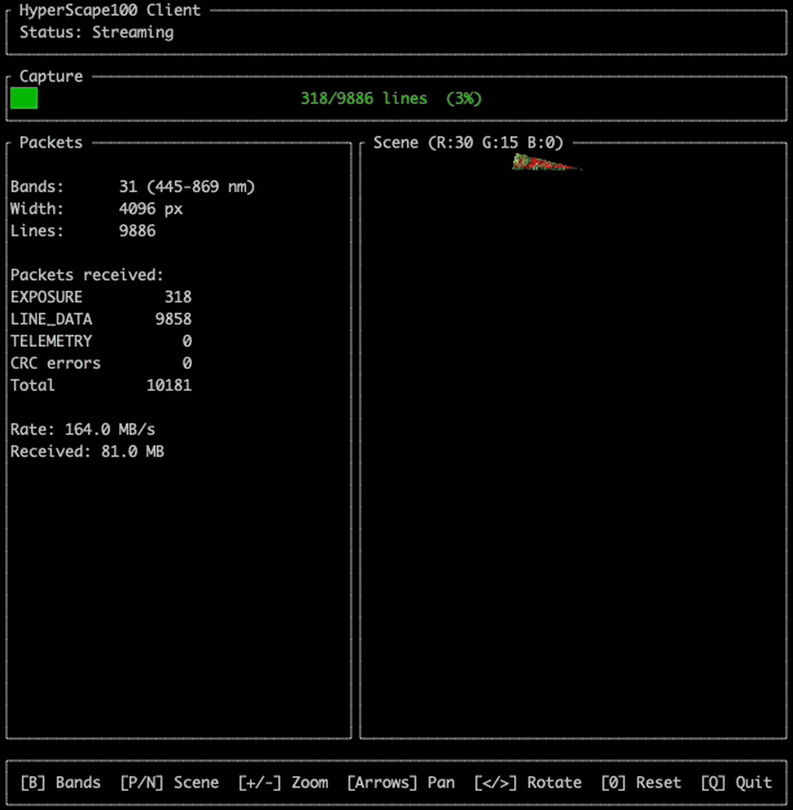

The HyperScape100 Emulator streams ICD-compliant session data over TCP, simulating the LVDS data interface and I2C/SPI control interface for development without hardware. It includes an interactive TUI client for visualizing the data stream in real time.
HyperScape100
The HyperScape100 is a hyperspectral pushbroom imager built by Simera Sense for CubeSat and small satellite platforms. It captures up to 32 spectral bands across the visible and near-infrared range using a CMV12000 sensor with a linear variable filter. Missions flying the HyperScape100 include the Wyvern Dragonette constellation, TRL Space TROLL, Xplore XCUBE, and ESA's upcoming OPS-SAT VOLT.
How the Emulator Works
The emulator reads pre-converted scene data from disk and streams it as ICD-compliant packets over two TCP ports:
- Scene data is loaded line-by-line from disk. No full-scene buffering, works with multi-GB scenes.
- Each line is wrapped in ICD packet framing with headers, CRC-32 footers, and interleaved telemetry.
- The packet stream is sent over TCP :4001 (data port) to your application.
- Your application sends band reconfiguration or scene navigation commands back via TCP :4002 (control port).
- The emulator responds with a new session using the updated configuration.
Features
ICD-Compliant Packets
All packet structs verified against the xScape Control and Data ICD. CRC-32 validated against ICD test vectors.
Streaming Server
Streams line-by-line from disk over TCP. No full-scene buffering. Works with multi-GB scenes.
Band Reconfiguration
Select which spectral bands to stream via the control port. Toggle individual bands on/off interactively.
Multi-Scene
Load a directory of scenes and navigate between them. Cycle through different locations and conditions.
Interactive TUI Client
Ratatui-based terminal UI with false-color scene preview, zoom/pan/rotate, live packet stats, and band selector.
Thoroughly Tested
Comprehensive test coverage. Packet format, CRC-32, serialization round-trips, TCP streaming.
Session Stream
The emulator produces the exact packet stream defined by the xScape Control and Data ICD (doc 051715):
| Packet | ID | Contains |
|---|---|---|
| SESSION START | 0x00 | Session ID, platform/instrument IDs |
| IMAGER INFORMATION | 0xA0 | Product ID, serial, firmware version |
| IMAGER CONFIGURATION | 0xA1 | Band wavelengths, TDI stages, line period |
| TIME SYNCHRONISATION | 0x07 | Imager-to-platform time correlation |
| SCENE START | 0x02 | Scene type, width, height |
| IMAGER TELEMETRY | 0xA3 | Sensor temperature (every 500ms) |
| EXPOSURE START | 0x03 | Timestamp (one per line) |
| LINE DATA | 0x04 | Pixel data (one per band per line) |
| IMAGER TELEMETRY | 0xA3 | Final telemetry |
| SESSION END | 0x01 | Session ID |
TUI Client
The included terminal client is a convenient demo of how to interact with the emulator. It connects to the TCP ports, parses the ICD packet stream in real time, and renders a false-color scene preview with live stats. Use it as a reference for building your own integration.

Integrating with the Emulator
To build software that consumes the HyperScape100 data stream:
- Connect to the data port (default 4001) via TCP.
- Scan for the sync word
0x5353to find packet boundaries. - Parse the 8-byte header to get the packet ID and payload length.
- Validate the CRC-32 footer (zlib-compatible).
- Process packets by ID using the session stream format above.
- Reassemble spectral data. Each LINE DATA packet contains one band for one line.
To reconfigure bands, connect to the control port (default 4002) and send RCFG + band count + wavelengths. To switch scenes, send NSCN + direction. The src/packets/ library provides ready-to-use C functions for packet parsing and serialization.
Scene Data
The recommended data source is the Wyvern Open Data Program, which provides free hyperspectral imagery from the same HyperScape100 sensor under CC BY 4.0. A Python converter transforms GeoTIFFs to the emulator's raw format, producing data as it would come from the camera hardware.
Quick Start
# Build
mkdir build && cd build && cmake .. && make
# Convert scene data
pip install -r tools/requirements.txt
python tools/convert.py path/to/scene.tiff -o data/
# Terminal 1: start emulator
./build/emu --scene data/
# Terminal 2: start TUI client
cd client && cargo run --release